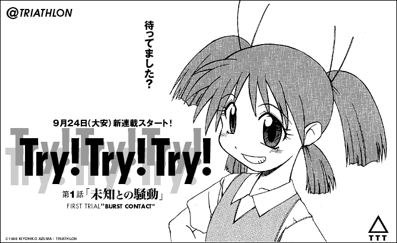

This image was uploaded to the internet to announce the beginning of serialization.
Even though I kept talking about serialization, absolutely nooooothing ever got posted!
There were a ton of people who thought otherwise, but that really is the truth.
I much prefer announcing things than actually creating them, so that was a pretty careless thing to write.
The reason for writing "@TRIATHLON" is becuase this was the homepage where "Try! Try! Try!" would be published.
The private office known as "TRIATHLON" and the artist "Kiyohiko Azuma" became one in the same,
now known as "YOTUBA SUTAZIO".
---------------------------------------------------------------------
Kept you waiting, huh?
Serialization begins on September 24! (your lucky day!)
Try! Try! Try!
Episode 1: The Fued with Suechi
FIRST TRIAL "BURST CONTACT"
---------------------------------------------------------------------